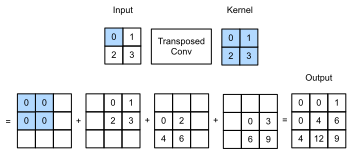
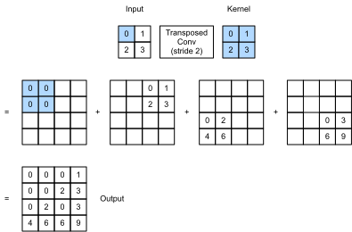

14.10. 转置卷积¶
到目前为止，我们已经见过的 CNN 层， 例如卷积层（7.2节）和汇聚层（7.5节）， 通常会减小（下采样）输入的空间维度（高度和宽度）， 或者使其保持不变。 在像素级分类的 语义分割中， 如果输入和输出的 空间维度相同，将会很方便。 例如， 某个输出像素处的通道维 可以保存同一空间位置 输入像素的分类结果。
为了实现这一点，特别是在 空间维度被 CNN 层减小之后， 我们可以使用另一类 CNN 层， 它可以增大（上采样）中间特征图的 空间维度。 本节 我们将介绍 转置卷积（transposed convolution），它也称为分数步幅卷积（fractionally-strided convolution）:cite:Dumoulin.Visin.2016， 用于逆转卷积的下采样操作。
import torch
from torch import nn
from d2l import torch as d2l
from mxnet import init, np, npx
from mxnet.gluon import nn
from d2l import mxnet as d2l
npx.set_np()
14.10.1. 基本操作¶
暂时忽略通道， 让我们从 步幅为 1、无填充的 基本转置卷积操作开始。 假设 给定一个 \(n_h \times n_w\) 的输入张量 和一个 \(k_h \times k_w\) 的卷积核。 以步幅 1 在每一行滑动卷积窗口 \(n_w\) 次、 在每一列滑动窗口 \(n_h\) 次， 总共得到 \(n_h n_w\) 个中间结果。 每个中间结果都是 一个初始化为零的 \((n_h + k_h - 1) \times (n_w + k_w - 1)\) 张量。 为了计算每个中间张量， 输入张量中的每个元素 都与卷积核相乘， 使得得到的 \(k_h \times k_w\) 张量 替换每个中间张量中的一部分。 请注意， 每个中间张量中被替换部分的位置 对应于用于计算的 输入张量中元素的位置。 最后，对所有中间结果 求和以产生输出。
作为一个例子， 图14.10.1 说明了 如何对 \(2\times 2\) 的输入张量计算使用 \(2\times 2\) 卷积核的转置卷积。

图14.10.1 使用 \(2\times 2\) 卷积核的转置卷积。阴影部分是中间张量的一部分，也是用于计算的输入和卷积核张量元素。¶
对于输入矩阵 X 和卷积核矩阵
K，我们可以实现这个基本的转置卷积操作trans_conv。
def trans_conv(X, K):
h, w = K.shape
Y = torch.zeros((X.shape[0] + h - 1, X.shape[1] + w - 1))
for i in range(X.shape[0]):
for j in range(X.shape[1]):
Y[i: i + h, j: j + w] += X[i, j] * K
return Y
def trans_conv(X, K):
h, w = K.shape
Y = np.zeros((X.shape[0] + h - 1, X.shape[1] + w - 1))
for i in range(X.shape[0]):
for j in range(X.shape[1]):
Y[i: i + h, j: j + w] += X[i, j] * K
return Y
与（7.2节 中）通过卷积核减小输入元素的
常规卷积相比， 转置卷积 通过卷积核广播输入元素， 从而
产生比输入更大的输出。 我们可以根据 图14.10.1
构造输入张量 X 和卷积核张量
K，来验证上述实现的基本二维转置卷积操作的输出。
X = torch.tensor([[0.0, 1.0], [2.0, 3.0]])
K = torch.tensor([[0.0, 1.0], [2.0, 3.0]])
trans_conv(X, K)
X = np.array([[0.0, 1.0], [2.0, 3.0]])
K = np.array([[0.0, 1.0], [2.0, 3.0]])
trans_conv(X, K)
另一种方式是， 当输入 X 和卷积核 K 都是四维张量时，
我们可以使用高级 API 获得相同的结果。
X, K = X.reshape(1, 1, 2, 2), K.reshape(1, 1, 2, 2)
tconv = nn.ConvTranspose2d(1, 1, kernel_size=2, bias=False)
tconv.weight.data = K
tconv(X)
X, K = X.reshape(1, 1, 2, 2), K.reshape(1, 1, 2, 2)
tconv = nn.Conv2DTranspose(1, kernel_size=2)
tconv.initialize(init.Constant(K))
tconv(X)
14.10.2. 填充、步幅和多通道¶
与填充应用于输入的常规卷积不同， 在转置卷积中， 填充应用于输出。 例如， 当把高度和宽度 两侧的填充数 指定为 1 时， 转置卷积输出的第一行和最后一行 以及第一列和最后一列 将被移除。
tconv = nn.ConvTranspose2d(1, 1, kernel_size=2, padding=1, bias=False)
tconv.weight.data = K
tconv(X)
tconv = nn.Conv2DTranspose(1, kernel_size=2, padding=1)
tconv.initialize(init.Constant(K))
tconv(X)
在转置卷积中， 步幅是为中间结果（因而也是输出）指定的，而不是为输入指定的。 使用 图14.10.1 中 相同的输入和卷积核张量， 把步幅从 1 改为 2 会同时增大中间张量的高度和宽度， 从而得到 图14.10.2 中的 输出张量。

图14.10.2 步幅为 2、使用 \(2\times 2\) 卷积核的转置卷积。阴影部分是中间张量的一部分，也是用于计算的输入和卷积核张量元素。¶
下面的代码片段可以验证 图14.10.2 中步幅为 2 的转置卷积输出。
tconv = nn.ConvTranspose2d(1, 1, kernel_size=2, stride=2, bias=False)
tconv.weight.data = K
tconv(X)
tconv = nn.Conv2DTranspose(1, kernel_size=2, strides=2)
tconv.initialize(init.Constant(K))
tconv(X)
对于多个输入和输出通道， 转置卷积 的工作方式与常规卷积相同。 假设 输入有 \(c_i\) 个通道， 并且转置卷积 为每个输入通道 分配一个 \(k_h\times k_w\) 的卷积核张量。 当指定多个输出通道时， 每个输出通道都有一个 \(c_i\times k_h\times k_w\) 的卷积核。
总而言之，如果我们把 \(\mathsf{X}\) 输入卷积层 \(f\) 以输出 \(\mathsf{Y}=f(\mathsf{X})\)，并创建一个与 \(f\) 具有相同超参数（除了输出通道数 等于 \(\mathsf{X}\) 的通道数之外）的转置卷积层 \(g\)， 那么 \(g(Y)\) 的形状将与 \(\mathsf{X}\) 相同。 这可以用下面的例子来说明。
X = torch.rand(size=(1, 10, 16, 16))
conv = nn.Conv2d(10, 20, kernel_size=5, padding=2, stride=3)
tconv = nn.ConvTranspose2d(20, 10, kernel_size=5, padding=2, stride=3)
tconv(conv(X)).shape == X.shape
X = np.random.uniform(size=(1, 10, 16, 16))
conv = nn.Conv2D(20, kernel_size=5, padding=2, strides=3)
tconv = nn.Conv2DTranspose(10, kernel_size=5, padding=2, strides=3)
conv.initialize()
tconv.initialize()
tconv(conv(X)).shape == X.shape
14.10.3. 与矩阵转置的关系¶
转置卷积是以 矩阵转置命名的。 为了说明这一点， 让我们首先
看看如何使用矩阵乘法 实现卷积。 在下面的例子中，我们定义一个
\(3\times 3\) 的输入 X 和一个 \(2\times 2\) 的卷积核
K，然后使用 corr2d 函数计算卷积输出 Y。
X = torch.arange(9.0).reshape(3, 3)
K = torch.tensor([[1.0, 2.0], [3.0, 4.0]])
Y = d2l.corr2d(X, K)
Y
X = np.arange(9.0).reshape(3, 3)
K = np.array([[1.0, 2.0], [3.0, 4.0]])
Y = d2l.corr2d(X, K)
Y
接下来，我们把卷积核 K 重写为 一个包含大量零的 稀疏权重矩阵
W。 权重矩阵的形状为（\(4\)，\(9\)），
其中非零元素来自 卷积核 K。
def kernel2matrix(K):
k, W = torch.zeros(5), torch.zeros((4, 9))
k[:2], k[3:5] = K[0, :], K[1, :]
W[0, :5], W[1, 1:6], W[2, 3:8], W[3, 4:] = k, k, k, k
return W
W = kernel2matrix(K)
W
def kernel2matrix(K):
k, W = np.zeros(5), np.zeros((4, 9))
k[:2], k[3:5] = K[0, :], K[1, :]
W[0, :5], W[1, 1:6], W[2, 3:8], W[3, 4:] = k, k, k, k
return W
W = kernel2matrix(K)
W
把输入 X 逐行连结起来，得到一个长度为 9 的向量。然后，W
与向量化的 X 的矩阵乘法给出一个长度为 4 的向量。
将其重塑之后，我们就可以得到与上面原始卷积操作 相同的结果 Y：
我们刚刚用矩阵乘法实现了卷积。
Y == torch.matmul(W, X.reshape(-1)).reshape(2, 2)
Y == np.dot(W, X.reshape(-1)).reshape(2, 2)
同样地，我们可以使用 矩阵乘法实现转置卷积。 在下面的例子中，
我们把上面常规卷积的 \(2 \times 2\) 输出 Y 作为转置卷积的输入。
为了通过矩阵相乘实现该操作， 我们只需要转置权重矩阵 W，
得到新的形状 \((9, 4)\)。
Z = trans_conv(Y, K)
Z == torch.matmul(W.T, Y.reshape(-1)).reshape(3, 3)
Z = trans_conv(Y, K)
Z == np.dot(W.T, Y.reshape(-1)).reshape(3, 3)
考虑通过矩阵相乘 来实现卷积。 给定输入向量 \(\mathbf{x}\) 和权重矩阵 \(\mathbf{W}\)， 卷积的前向传播函数 可以通过将其输入与权重矩阵相乘 来实现， 即输出向量 \(\mathbf{y}=\mathbf{W}\mathbf{x}\)。 由于反向传播 遵循链式法则， 且 \(\nabla_{\mathbf{x}}\mathbf{y}=\mathbf{W}^\top\)， 卷积的反向传播函数 可以通过将其输入与 转置后的权重矩阵 \(\mathbf{W}^\top\) 相乘 来实现。 因此， 转置卷积层 只需交换卷积层的 前向传播函数 和反向传播函数： 它的前向传播函数 和反向传播函数 分别将其输入向量与 \(\mathbf{W}^\top\) 和 \(\mathbf{W}\) 相乘。
14.10.4. 小结¶
与通过卷积核减小输入元素的常规卷积不同，转置卷积通过卷积核广播输入元素，从而产生比输入更大的输出。
如果我们把 \(\mathsf{X}\) 输入卷积层 \(f\) 以输出 \(\mathsf{Y}=f(\mathsf{X})\)，并创建一个与 \(f\) 具有相同超参数（除了输出通道数等于 \(\mathsf{X}\) 的通道数之外）的转置卷积层 \(g\)，那么 \(g(Y)\) 的形状将与 \(\mathsf{X}\) 相同。
我们可以使用矩阵乘法实现卷积。转置卷积层只需交换卷积层的前向传播函数和反向传播函数。
14.10.5. 练习¶
在 14.10.3节 中，卷积输入
X和转置卷积输出Z具有相同的形状。它们的值相同吗？为什么？使用矩阵乘法实现卷积高效吗？为什么？